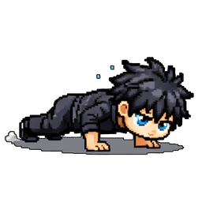
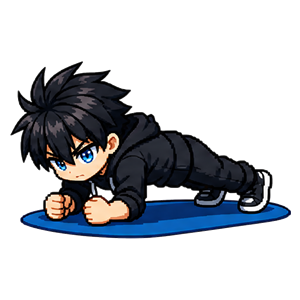
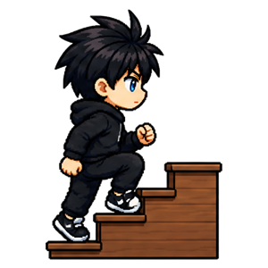
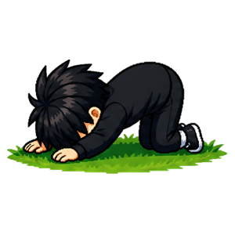
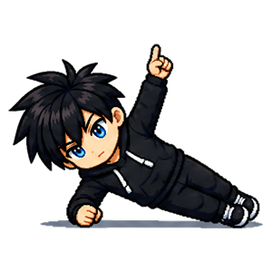

Habitudes pour le corps
Bouger, se renforcer, entretenir. Dix habitudes qui commencent à cinq minutes — sans salle de sport et sans matériel.





À quoi servent les habitudes du corps
C'est la discipline qui fait le plus peur, parce qu'on l'associe à une salle de sport, un abonnement et trois heures par semaine. Ici, rien de tout ça : aucune de ces dix habitudes ne demande de matériel, de tenue, ni de sortir de chez toi. La plus longue prend quinze minutes, la plus courte trente secondes.
Mettre le corps en mouvement
Marcher, escaliers, saut sur place et courir partagent une idée simple : le problème n'est presque jamais l'intensité, c'est l'immobilité. Une journée assise ne se rattrape pas par une séance héroïque le samedi. Les escaliers sont le cas extrême — c'est le seul entraînement qui ne prend aucune minute de plus dans ta journée, puisque tu montais de toute façon.
Construire de la force
Squats, pompes, planche et gainage latéral travaillent au poids du corps, donc partout. Ils commencent à cinq répétitions ou vingt secondes — et ce n'est pas une politesse : c'est le seuil auquel on recommence le lendemain sans se chercher d'excuse. Le gainage, en particulier, protège le dos mieux que n'importe quelle série d'abdominaux.
Entretenir la mécanique
Étirements dynamiques et mobilité du dos sont les habitudes qu'on saute toujours, et celles qu'on regrette le plus tard. Un dos ne fait pas mal parce qu'il est faible : il fait mal parce qu'il ne bouge plus dans toute son amplitude. Deux minutes entretiennent ce que des années de position assise abîment.